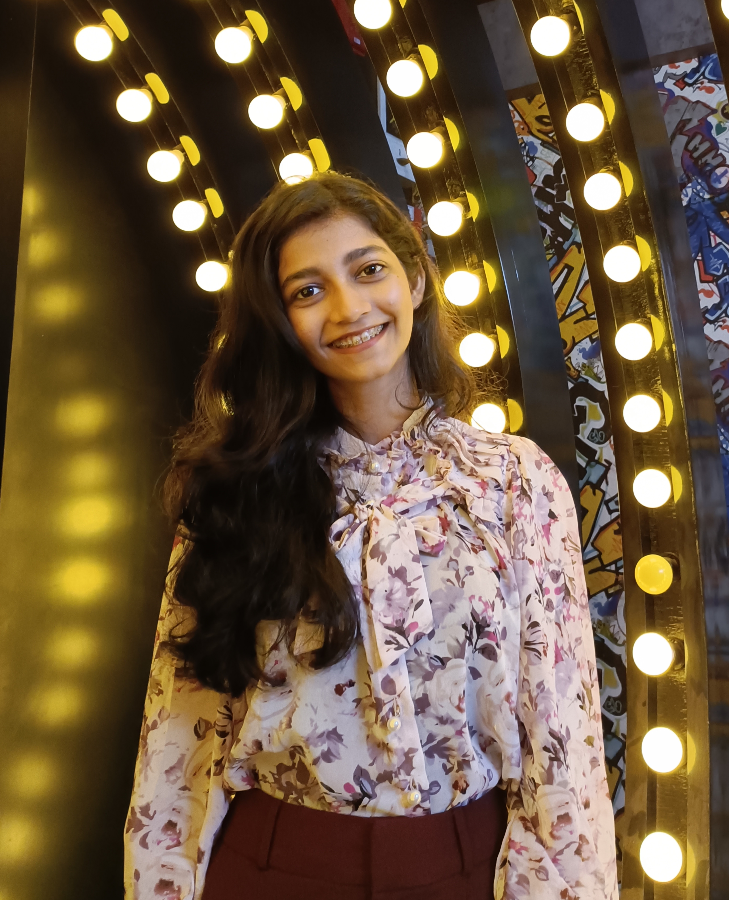

I am an aspiring Web Developer and I aim to persue my career in a professionally managed organisation.I am very passionate about improving my coding skills and developing applications and websites. I am currently working to improve my skill set.

ABOUT ME
I'm currently a 3rd year Btech student majoring in computer science. I have always been passionate about technology and the ways in which it can change our lives. Outside of my studies, I love to explore new places and try my hand at adventure sports. Travelling has taught me so much about the world and myself, and I'm always eager to learn more.
One of the things I enjoy most about travelling is meeting new people and learning from them. I believe that everyone has something valuable to teach us, and I try to approach every new encounter with an open mind and a willingness to learn. This is also something that I bring to my studies - I'm a fast learner and always eager to expand my knowledge and skills.
Overall, I'm a curious and adventurous person who is always looking for new experiences and opportunities to learn and grow. I'm excited to see where my journey takes me, and I'm grateful for the chance to connect with others along the way.